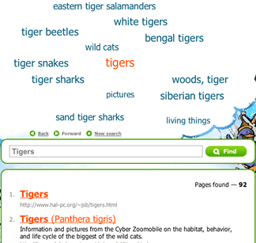
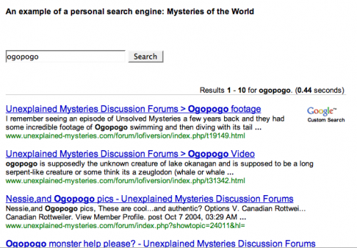

Searching the Web
Be CyberSmart: Researching the Internet (11:27) featuring Joyce Valenza, speaks to the resources students require to locate good online information and the skills required to do so - not just from the free web but from the online databases.
They Might be Gurus: Teen Information-Seeking Behavior (pdf) by Joyce Valenza maintains that we must understand how youth connect with information by examining it within four buckets; cognitive, affective, social and physical. Students may have great technical skills but they lack the ability to navigate the web environment effectively.
Locating Resources On the Web
Before students begin searching on the web they should have a clear understanding of the medium in which they are working. Although this tutorial, Welcome to the Web , is meant for primary students middle years and high school teachers should review the points presented to ensure that their students understand things such as the difference between the internet and the world wide web and terminology such as 'browser', hyperlink, etc.
Understanding the difference between search engines and search directories:
| Search Engines |
Search Directories |
|
Search engines create their listings automatically. Search engines crawl the web, then people search through what they have found. |
A directory depends on humans for its listings. You submit a short description to the directory for your entire site, or editors write one for sites they review. A search looks for matches only in the descriptions submitted. |
Power Search Techniques
Successful searching involves two key steps. First, you must have a clear understanding of how to prepare your search.
- You must identify the main concepts in your topic and determine any synonyms, alternate spellings, or variant word forms for the concepts.
- Second, you need to know how to use the various search tools available on the Internet. For example, search engines (e.g., AltaVista) are very different than subject directories (e.g., Yahoo). Even search engines themselves can vary greatly in size, accuracy, features, and flexibility.
Bare Bones 101: A Basic Tutorial On Search The Web provides and excellent overview on everything to do with search engines
If you want search basics go directly to the Bare Bones QuickTips
Web Search Strategies Tutorials
Four Nets for Better Searching
NoodleQuest - a really cool interactive way to discover new search tools based on your research need
Web Searching Glossary -- what words like 'meta-tag' mean?
"The Searchies" A WebQuest
Students are divided into small groups to become expert in one search tool. After examining and testing that tool, they are asked to prepare an advertisement which will sell their search tool's best features to the class so that it may win one of the revered "Searchie Awards." They must also present the small print, or the negative features of the tool. The winners of the Searchies will be determined by the class following the student presentations. Joyce Valenza
Advanced Search Rubric - This is a rubric for the using advanced and boolean searches. This search requires an understanding of the keywords, boolean logic, advanced search features, structuring and refining searches and suitable search engines.
Kids' Search Engines
Kids' Search Engines
|
|
|
|
The kid-safe directories below use human beings to filter out sites that might be considered objectionable for viewing by children.
Quintura - a visual search engine is one of the best children's search engines to be found. It is a particularily useful tools for students to use when they begin their research. Typically most students begin with a very broad search topic. Quintura provides a visual look how they can narrow and focus their search.
After entering the search term, Quintura presents a tag cloud of words. Moving the cursor to the word that most closely matches the search term causes the to cloud to rearrange around that term. You glide though the Internet this way, until you have ’steered’ yourself to the best results; even if its something you did not know was there when you began your search.

Other Search Tools
- American Library Association: Great Sites for Kids
- FactMonster
10 Search Engines for Kids (June 2010)
Google Filtering Options
See the SafeSearch help page for instructions on setting up filtering on a permanent or as-needed basis.
Search Tools
Search Engines
Search engines are the World Wide Web's equivalent of a library catalogue. However, because of the enormous size of the Web, no search engine includes everything that is on the Web. Just as there are different ways to search for a book in the library, there are different ways to locate resources on the internet.
How Search Engines Work: A simple animation provides an explanation
How Internet Search Engines Work - a detailed explanation from How Stuff Works
Choose the Best Search Engine for your Information Need
NoodleQuest - a really cool interactive way to discover new search tools based on your research need
Google is the most used search engine on the web. Google For Educators offers great resources (posters, bookmarks, etc) that can be used with both staff and students.
Google Guide - an online interactive tutorial and reference for experienced users, novices, and everyone in between.
Goo-jitsu: A guide to mastery of Google searches
Google Search: A Tutorial Follow the links in this tutorial to understand how to use link, title, domain and host searching and then test your understanding with the practice activities.
Start Your Search Engines: Taming Google (and Other Tips) -To tame Google results and create the most effective search, it pays to know some handy tips.
Create your own custom Google search using Google Custon Search This tool allows you to create a search based on a selection of web sites selected by you. You can place this search on a blog, wiki or web page from which your students can search.
Getting Started Creating a Custom Search Engine (pdf) by Joe Barker ©2007 by the Regents of the University of California, are excellent step-by-step instructions on how to set up you own search engine.
The search below is based on only five websites but provides students a choice of information on a variety of topics. The use of this tool allows teachers to pre-select sites for students to use but encourages the development of good search techniques.

Ask, a search engine arising from the previous, Ask Jeeves, is challenging Google. Give it a good look and see how it compares to Google. Google and Ask.com - a happenstance comparison is a useful comparison from the Librarian in Black.
Other Search Engines
New Search Engines - an overview of three new search engines: Mooter, a clustering search engin, Green Maven, gateway to the Green Web focusing on green, conscious, and sustainable websites, and Boolify - a search engine that visually incorporates boolean searching - very cool!
Search Tools - an extensive page of search tools from Springfield Township High School Virtual Library
Blogdimension : The Web 2.0 Search Engine - a great place to search for blog posts.
Alltop : A blog directory - “digital magazine rack” of the Internet.
How do ya?: Learn how to do anything! ...plan a wedding, write like Kurt Vonneget, paint like Pablo Picasso and fly a plane.
Exalead - an alternative search engine - especially recommended for librarians.
MagSearch - magazine search page that uses the Gigablast custom search feature to search selected online magazines.
Meta-Search Engines
Meta-Search Engines
Searching the Invisble Web
 The "visible web" is what you see in the results pages from general web search engines. It's also what you see in almost all subject directories. The "invisible web" is what you cannot retrieve ("see") in the search results and other links contained in these types of tools. The invisible web is also referred to as the Deep Web .
The "visible web" is what you see in the results pages from general web search engines. It's also what you see in almost all subject directories. The "invisible web" is what you cannot retrieve ("see") in the search results and other links contained in these types of tools. The invisible web is also referred to as the Deep Web .
There are many Web pages that can't be indexed, or information that's available via the Web but isn't accessible by the search engines. This is the stuff of the Invisible Web.Why can't some pages be indexed? The most basic reason is that there are no links pointing to a page that a search engine spider canfollow. Or, a page may be made up of data types that search engines don't index - graphics, CGI scripts, Macromedia flash or PDF files, for example.
But the biggest part of the Invisible Web is made up of information stored in databases. When an indexing spider comes across a database, it's as if it has run smack into the entrance of a massive library with securely bolted doors. Spiders can record the library's address, but can tell you nothing about the books, magazines or other documents it contains. From The Invisible Web by Chris Sherman.
Getting in Deep: Finding the Deep Web When You Need It by Jamie Mckenzie of FNO .
While the Deep Internet provides the most reliable information for many topics, it can do little good for those who do not consult it because it is unknown to them.
Take Kids Deep Inside Where the Deep Web Hides - an excellent post by Vicki Davis which articulates how she intends to expose her students to the deep web.
Beyond Google: The Invisible Web - FAQ's
Invisible or Deep Web: What it is, Why it exists, How to find it, and Its inherent ambiguity - a tutorial. - an excellent collection of tools to search the invisible web.
Search Tools for the Invisible Web
Educators who want to teach their students about the buried treasures of the Web should prepare a list—or a page on their library's Web site—of the most effective Hidden Web tools.
-
Chat Room: The Invisible Web - How to find the hidden resources that most search tools skip over.
- The Invisible Web Databases from 21st Century Literacies - this list includes a wide range of curriculum/subject related databases.
-
Research Beyond Google: 119 Authoritative, Invisible, and Comprehensive Resource
- Using Deep Search Engines for Academic and Scholarly Research - another great list of tools that provide access to hiddent content on the web.
-
Librarians Internet Index - a searchable, annotated subject directory of more than 11,000 Internet resources selected and evaluated by librarians for their usefulness to users of public libraries.
-
Complete Planet
70,000+ searchable databases and specialty search engines. -
Infomine Multiple Database Search - an "academic" search engine, focusing on scholarly resource collections, electronic journals and books, online library card catalogs, and directories of researchers. Unlike many Invisible Web search tools, Infomine allows simultaneous searching of multiple databases.
-
Scirus - a science search engine dedicated to only searching science-specific content. At the time of this writing, Scirus searches over 250 million science-specific web pages, filtering out those results that are not science related in order for you, the user, to quickly pinpoint what it is that you're looking for.
-
99 Resources to Research & Mine the Invisible Web - an annotated list of sites, tools and articles categorized as search engines, databases, catalogs,directories, social media, and guides.
Canadian Search Tools for the Invisible Web
- Canadian Institute for Health Information - search by data collections, research reports, quick stats, and more.
Using Google to Search the Invisible Web
If your students are going to use Google they can use it to locate searchable databases by searching a subject term and the word "database". If the database uses the word database in its own pages, you are likely to find it in Google and it is more likely to contain information that is useful to your students
For example a search for the terms minerals + "data base" turned up two great data base resources without the commercial minerals resources.
(From: Deep Inside the Invisible Web )
Copyright Friendly Music and Image Search Tools
Stay Online: Find LEGAL Images and Videos with Creative Commons Search (and Download YouTube, etc, with Zamzar.com) by Clay Burell of Beyond School
 A number of copyright-friendly archives are now available. The sources include government archives offering liberal use, media in the public domain, and collections of material posted by their creators with the definite purpose of sharing their work or seeing it grow and mix. Creative Commons is a license that allows creators to maintain a copyright while allowing users the right to reuse, reproduce, and change software or files.
A number of copyright-friendly archives are now available. The sources include government archives offering liberal use, media in the public domain, and collections of material posted by their creators with the definite purpose of sharing their work or seeing it grow and mix. Creative Commons is a license that allows creators to maintain a copyright while allowing users the right to reuse, reproduce, and change software or files.
Joyce Valenza posted the following list of her personal favourite copyright friendly archives:
Images

- Flickr's Creative Commons Pool: Browse through the images provided by Flickr users who have chosen to offer their work under a Creative Commons license
- openphoto: Free stock images. Use categories on the right to browse or click on search in the top bar
- US Government Photos and Multimedia Most materials in the public domain, but read the disclaimers.
- Wikimedia Commons: a database of 1,815,754 freely usable media files to which anyone can contribute.
- Common Content: an open catalog of Creative Commons licensed content
- Creative Commons Search Flickr, Yahoo!, Google, OWL Music Search, SpinXpress, and BlipTV to "find Creative Commons-licensed media that you can legally share and reuse for free"
- Pics4Learning Copyright friendly images for education
- MorgueFile "provides the public and creative community with free raw photo materials"
-
flickrcc A great photo sharing site for creative commons photos. You can also edit photos from within the site
- Flickr Storm - another Flickr search tool
10 Places to Find Free Images Online and Make Your Content More Linkable
There are some differences in the types of images that are available online, like some images are free and others are rights protected. Understanding the differences, as well as ten of the most popular places to find free images online, allows you to make your website more attractive.
Images Canada
All images can be reproduced, in print and/or digital format, for non-commercial purposes. The images must not be altered or manipulated in any way and proper " Credit " credit must accompany the images.
Internet for Image Searching
An excellent tutorial on how to use the Internet to find copyright cleared images for your work, quickly and efficiently.
Music
- Shambles: Sound Effects and Music Comprehensive portal collection by Chris Smith
- Educational CyberPlayGround: Get Music Downloads Links to portals and useful guidance
- Open Source Audio from the Internet Archive
- Incompetech Royalty Free Music
- Opsound Copyright friendly sound "Listeners are invited to download, share, remix, and reimagine."
- Partners in Rhyme: Free Sound Effects
- Partners in Rhyme: Free Music Loops
- Soundzabound Music Library
- OneMusic - from the BBC - Over 1,000 free music samples
- MusOpen - an online music library of copyright free music (public domain
- Freesound The Freesound Project is a collaborative database of Creative Commons licensed sounds. Freesound focusses only on sound, not songs.
Video, Images, Music and Sound
archive.org The Internet Archive is building a digital library of Internet sites and other cultural artifacts in digital form. Freely download images, movies, music
It is essential to check individual licensing notices
before publishing on the Web or broadcasting!
Visual Search Engines
Visual Search Engines
Standard search engines are great for finding individual Web pages to answer specific questions. But their results lists do not help you to understand a field in general. A visual search engine clusters results, and in doing so gives you a better overview of a field. These are useful tools that can be used to help students narrow and focus their searches.
- VisuWords - online graphical dictionary — Look up words to find their meanings and associations with other words and concepts. Produce diagrams reminiscent of a neural net. Learn how words associate.

After you enter your search query, you are presented with a tag cloud of words that looks like a just-finished Scrabble game. Moving your cursor to the word that most closely matches what you are looking for causes the to cloud to rearrange around that term. You glide though the Internet this way, until you have ’steered’ yourself to the best results; even if its something you did not know was there when you began your search.
There are other visual search tools including searchChrystal , Grokker , Clusty and KartOO - the following articles provide a review and a comparison of each.
My favourite of the search engines reviewed is Quintera - the adult search engine. It was the least confusing to view and to follow. I quite like the way it which it displayed the results for the term on which I hovered almost immediately on the right hand side of the page.